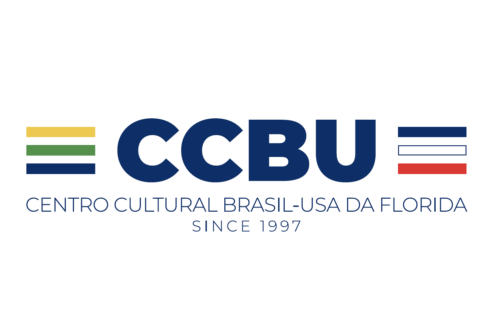
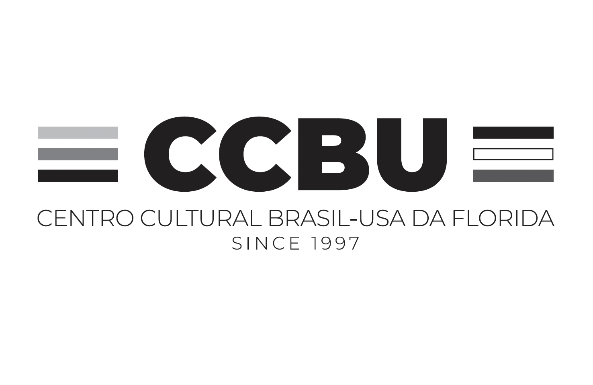
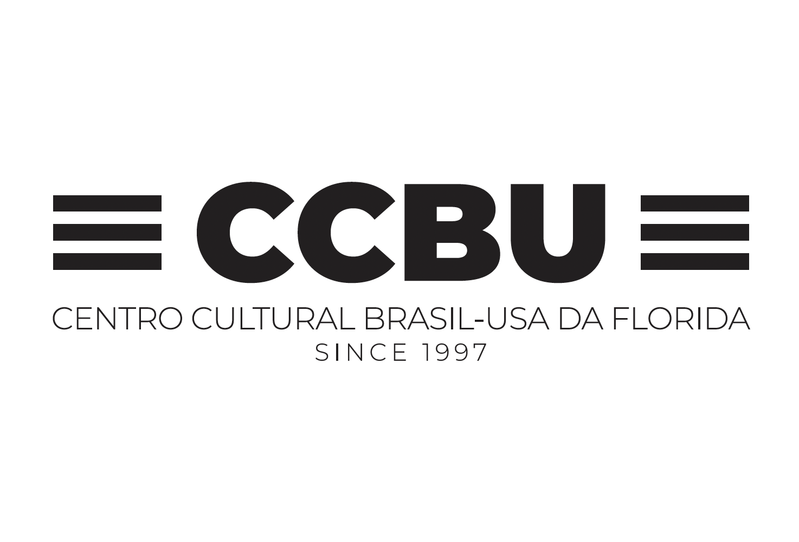
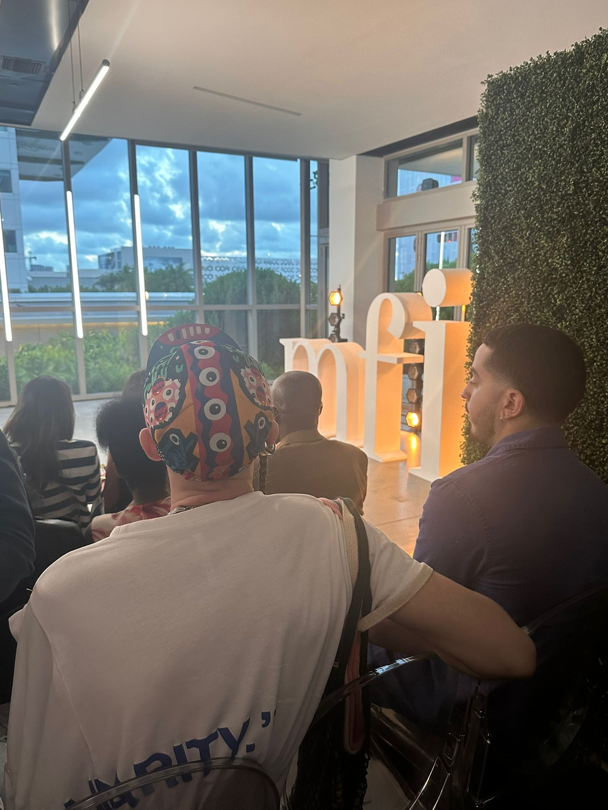
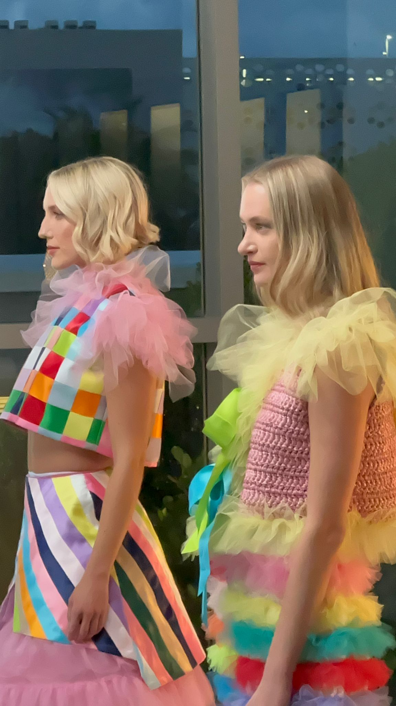

Centro Cultural Brasil Miami
Behind-the-scenes media and storytelling work with Centro Cultural Brasil Miami – connecting Brazilian culture, language, and community in Miami.
Key Findings
Iterating on logos with the board helped CCBU show up as a modern, recognizable cultural reference point in Miami.
Interview-style videos gave teachers a platform to explain why Portuguese belongs in Florida schools — turning policy goals into human stories.
Covering events and courses showed how language, culture, and career paths connect — making the center’s work easier to grasp at a glance.
Working with Miami Dade College on scholarships and the Design District space proved that strong partners can turn cultural programming into new opportunities for students and teachers.
Overview
Centro Cultural Brasil USA (CCBU) – also known as Centro Cultural Brasil Miami – is a non-profit organization founded in 1997 by volunteers to share Brazilian culture in Miami and South Florida. Today the center serves as a reference point for Brazilian culture in the region, connecting people through language, arts, and community programs.
Through CCBU, the community can access Portuguese language courses, lectures, cultural events, and exhibitions that highlight Brazilian artists, writers, and history. The organization also maintains a rich photo gallery and blog documenting everything from museum visits to local cultural initiatives, making Brazilian culture more visible and accessible in Miami.
You can learn more about their work and upcoming programs on their official site: centroculturalbrasilusa.org →
Logos designed
Some of the logo concepts I designed for CCBU – a full-color version inspired by the Brazilian and American flags, a grayscale variant, and a black-and-white lockup for single-color use.



My role


My work with Centro Cultural and partners like Miami Dade College combined strategy, branding, and on-the-ground coordination:
- Collaborated with Miami Dade College on scholarship negotiations, contributing insights from my perspective as a college and international student and helping shape criteria and funding that center inclusivity and student support.
- Designed more than 25 logo variations, iterating with the board of directors to arrive at an impactful visual identity for the organization.
- Assisted in producing five educational videos at the Brazilian Consulate with a team of over 10 people, encouraging professionals to become certified Portuguese teachers in the USA.
Working closely with Centro Cultural and Miami Dade College, I helped make sure the space in the Design District was set up for success – coordinating access, timing, and flow so the fashion show and recordings could run smoothly and feel welcoming for guests, teachers, and students.
Outcomes
The stories we captured helped Centro Cultural Brasil Miami better showcase the energy of their programs and the people behind them – making it easier to invite new participants, partners, and supporters into the work. For me, it was a way to stay connected to Brazilian culture while practicing visual storytelling, interviewing, and production planning.
Alongside event coverage, I filmed interview-style videos with teachers advocating to bring Portuguese into more schools and to update language-education policy in Florida. Those clips focus on why Portuguese matters for students and communities, and are available to review in conversation or during an interview.
The interviews became part of a course on how to become a Portuguese teacher in Florida – designed both to help students gain access to the language and to support adults who already speak Portuguese in turning that knowledge into certified teaching jobs.